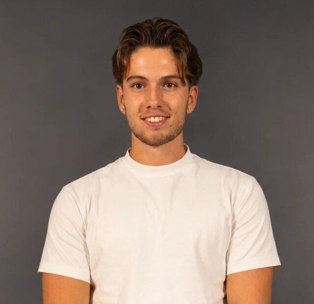
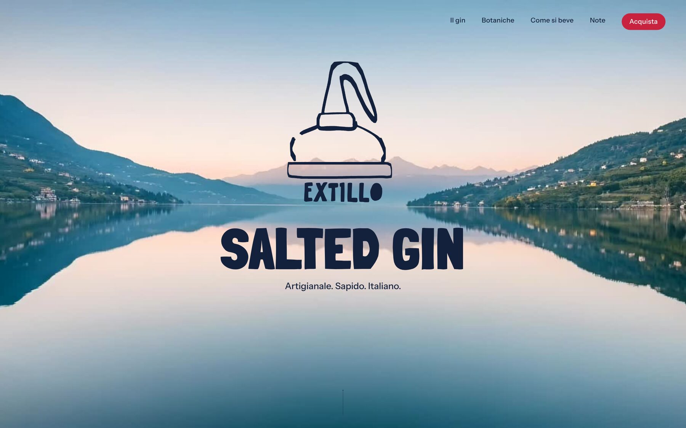

Andrea Miglioranza
Marketing, websites, video and art direction, made with AI. This portfolio is laid out as an exhibition: nine rooms, four works. Scroll to walk in.
- StudyingBusiness Creation & Entrepreneurship, H-FARM College
- WorkingField Operations Assistant, SDG Group
- MakingTwo new projects a month, shown here
Free entryGo straight to the worksGet in touch

How I work
Three rules behind every work in the next rooms.
Storyboard first
Every film is drawn and approved as key frames before a single clip is generated, so no time or credits go into the wrong direction.
On the Cattelan film, two directions were dropped before any animation.Measure, don’t eyeball
Seams between clips, scroll speed, answers of an assistant: checked with numbers, not by looking once.
POP and MIXCRAFT scroll test: slowest frame under 50 ms.Only numbers that hold up
Statistics come from published studies, sizes from the catalogue drawings. If a figure can’t be checked, it stays out.
Both numbers in the Cattelan film are from published research.
Extillo Gin
Read how it was made
The brief
Extillo is a savoury gin, distilled in a 45-litre still with botanicals from Lake Iseo and salt from the salt pans of Puglia. The site had to make people feel that journey, and lead to a purchase.
The idea: a single shot that starts at the lake, passes through the citrus, enters an orange blossom, turns it into salt crystals and arrives at the glass. The real bottle slides into frame at the end.
The process
Concept and direction
Three proposals, stress-tested before choosing one. Palette, fonts and tone taken from the bottle label.
Key frames
Images generated in sequence, each starting from the previous one, to keep light and colour consistent.
Film
Six chained image-to-video clips: each starts from the real last frame of the one before. Every seam measured, not just looked at.
Website
Scroll-film page on canvas with 601 frames, text that comes in on cue, a purchase section and a mobile version.
From petal to salt
The hardest passage: a petal fills with crystals and becomes a heap of salt. I built the sequence frame by frame, then handed it to the video model.




POP Energy and MIXCRAFT
Read how they were made
The brief
Two invented products, to show the same format works across opposite worlds: POP Energy, a pop-art energy drink can, and MIXCRAFT, a luxury cocktail kit in black and copper. Each needed a site that makes people want to buy.
The idea: for POP the camera rises along the can up to an explosion of fruit and ice, then the real can arrives with the buy button. For MIXCRAFT the box opens, the tools float and make a cocktail: shake, pour, a twist of orange to close the gesture.
The process
Concept and storyboard
One camera move per film: POP rises, MIXCRAFT moves forward. Each storyboard checked before generating, so no credits are spent on the wrong direction.
Key frames
Five for POP, six for MIXCRAFT, starting from the product images. Corrected one by one: more realistic fruit and ice, no hands in frame.
Film
Four-second image-to-video clips, chained: each starts from the real last frame of the previous one. Where the camera stopped or backed up at the end of a clip, I cut it.
Website
Scroll-film pages on canvas, titles that enter one at a time, a slowed pour to enjoy the moment, a finale with the real product and a diagonal-band transition between the two worlds.
From box to cocktail
The moment I wanted people to enjoy: the shaker pours and the tongs set the orange twist. I built the key frames one by one, then handed them to the video model.


Cattelan Italia, the film
Read how it was made
The brief
A studio that wants to print a furniture brand's next catalogue has to answer one question first: why still print, when everything is online? Furniture is a good place to ask it, because with fashion it is the sector where people receive the most catalogues.
The idea: the brand's own catalogue is the hero. It drops into a spotlight, opens and turns its pages, while two findings appear beside it: physical media gives 70% higher brand recall than digital ads (Canada Post and True Impact, 2015), and 52% of people say they buy more than they planned when shopping from a printed catalogue (Royal Mail MarketReach, 2017). The close: paper does not compete with digital, it switches it on.
The process
Research and story
Which sectors catalogues really sell in, which numbers hold up, and how to word a survey result so it is not overstated.
Storyboard
Key frames drawn with the same code as the final film and approved before animating. Two earlier directions were dropped along the way.
Animation
Every frame is a function of time: page turns, light cone, floating dust, counters. The catalogue's own pages are used as the turning pages.
Sound and export
Page turns, ticks, hits and a warm pulse, synthesised and placed on the exact frame of each event. Rendered frame by frame to 1080p.
From spotlight to proposal
The catalogue never leaves the stage: the numbers arrive beside it instead of on full-screen cards, and it turns its own page between them.


Cattelan Italia, the assistant
A showroom chat that knows the whole catalogue. It speaks Italian: try “un tavolo per 8 in marmo” or “dove posso vederlo dal vivo?”.
Read how it was made
The brief
A furniture showroom gets the same questions every day: what fits eight people, which finishes a table comes in, where to see it. The assistant answers them from the brand’s own catalogue and hands the visitor to a consultant with name, contact and city.
The idea: no AI model and no server, so it is fast, free to run and answers only from the catalogue. Every product was written as data from the 10_2026 Collection; when the catalogue has no answer, the assistant says so and offers a consultant.
What is your biggest table?Napoleon Keramik Outdoor, 320 cm, but it is for outdoors. Indoors the largest reach 300 × 130 cm.
A kitchen table, my walls are red.Gotham with a bronze base first: ceramic is the most practical top in a kitchen, and a dark base calms a strong colour.
Do you make kitchens?Not in the 2026 Collection. For the kitchen there are tables, chairs and stools.
The process
Catalogue to data
49 products with sizes, finishes and designers, checked against the catalogue drawings. Sizes only where they are clear.
Understanding
Category, room, colour, material, number of guests, small typos. A new request starts from zero; a refinement keeps the context.
Answers with a reason
Every suggestion says why it fits. Missing data is said plainly, never invented.
Leads and testing
A contact form inside the chat, then 50 real questions as an automatic test, run after every change.
Tools
What I use, grouped by what it makes.
Ideas, copy and code
- Claude and Claude Code concept, copy, research, code
- ChatGPT
Images
- Nano Banana and Nano Banana Pro key frames, product images
Film
- Seedance 2.0 image-to-video
- Higgsfield
- FFmpeg assembly and export
Sound
- Web Audio sound synthesised in code
- Artlist
Web
- HTML, CSS, JavaScript
- Canvas scroll engines, animation
Method
- Agile Project Management certified, H-FARM College
Path
International Baccalaureate
H-FARM International School
Business Creation & Entrepreneurship
H-FARM College, with a certification in Agile Project Management
Field Operations Assistant
SDG Group
Four works, one portfolio
Websites, a film and an assistant, all made with AI. You just walked past them.
Take a card
Thanks for visiting. Turn the card over for my details, or copy them from here.
- Emailandreamiglioranza0711@gmail.com
- LinkedInlinkedin.com/in/andreamiglioranza